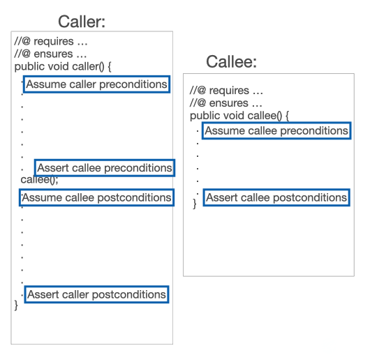

JML Tutorial - Method Calls
We have seen how to verify method implementations that have pre- and postconditions describing the behavior of method bodies that contain if statements and assignments. Now let’s progress to method calls.
The key point to remember is that verification in JML (and other similar deductive verification languages and tools) is modular by method. That is, each method is verified on its own; only when all methods are verified with a consistent set of specifications across all of them can the program as a whole be considered verified.
Consider two methods, a caller and a callee, as shown in this diagram.

The callee, on the right, is a simple standalone method. When the method is verified, the logical engine
- assumes its preconditions are true
- symbolically represents the actions of the method body
- asserts the postconditions—that is, proves that the postconditions logically follow from the preconditions and method body in every initial state allowed by the preconditions
As for the caller, it also follows the same three steps. But how do we represent the call to callee()? We could inline the whole callee method, but that would
become unwieldy, would not work for recursion, and is not modular.
Instead, we replace the call of callee() in the caller’s body with the callee’s
pre- and post-conditions. We know that the callee’s postconditions will be true if the callee’s preconditions are satisfied. So the caller, at the point of the method call,
- must prove (assert) that the callee’s preconditions hold
- and then it may assume that the callee’s postconditions will hold
As long as we keep the callee’s specifications the same, we can verify the callee and the caller independently. (Thus the callee’s specification is a summary of its behavior and is not affected by the callee’s implementation details.)
It is easy to see that this process works for verifying the methods in a program that do not call anything, to those methods that just call those leaves, all the way up to the top-level methods of the program. It can also be demonstrated that this process is sound when there are recursive calls, as long as it can be proved that the program terminates.
The following code is a simple example of a two-method verification.
// openjml --esc --progress --no-show-summary T_CallerCallee.java
public class T_CallerCallee {
public void caller1() {
boolean b1 = lessThanDouble(5,4);
//@ assert b1 == true;
boolean b2 = lessThanDouble(9,4);
//@ assert b2 == false;
}
public void caller2() {
boolean b1 = lessThanDouble(-1, -2);
}
public void caller3() {
boolean b2 = lessThanDouble(2, 2);
}
public void caller4() {
boolean b = lessThanDouble(4,2);
//@ assert b == true;
}
//@ requires x > y && y >= 0;
//@ ensures \result == (x < y + y);
public boolean lessThanDouble(int x, int y) {
return x-y < y;
}
}
The output on verifying is given next. Note that the openjml command includes
the --progress option, so we receive quite a bit more output.
Proving methods in T_CallerCallee
Starting proof of T_CallerCallee.T_CallerCallee() with prover z3_4_3
Method assertions are validated
Completed proof of T_CallerCallee.T_CallerCallee() with prover z3_4_3 - no warnings
Starting proof of T_CallerCallee.caller1() with prover z3_4_3
Method assertions are validated
Completed proof of T_CallerCallee.caller1() with prover z3_4_3 - no warnings
Starting proof of T_CallerCallee.caller2() with prover z3_4_3
Method assertions are INVALID
T_CallerCallee.java:12: verify: The prover cannot establish an assertion (Precondition: T_CallerCallee.java:26:) in method caller2
boolean b1 = lessThanDouble(-1, -2);
^
T_CallerCallee.java:26: verify: Associated declaration: T_CallerCallee.java:12:
public boolean lessThanDouble(int x, int y) {
^
T_CallerCallee.java:24: verify: Precondition conjunct is false: y >= 0
//@ requires x > y && y >= 0;
^
Completed proof of T_CallerCallee.caller2() with prover z3_4_3 - with warnings
Starting proof of T_CallerCallee.caller3() with prover z3_4_3
Method assertions are INVALID
T_CallerCallee.java:16: verify: The prover cannot establish an assertion (Precondition: T_CallerCallee.java:26:) in method caller3
boolean b2 = lessThanDouble(2, 2);
^
T_CallerCallee.java:26: verify: Associated declaration: T_CallerCallee.java:16:
public boolean lessThanDouble(int x, int y) {
^
T_CallerCallee.java:24: verify: Precondition conjunct is false: x > y
//@ requires x > y && y >= 0;
^
Completed proof of T_CallerCallee.caller3() with prover z3_4_3 - with warnings
Starting proof of T_CallerCallee.caller4() with prover z3_4_3
Method assertions are INVALID
T_CallerCallee.java:21: verify: The prover cannot establish an assertion (Assert) in method caller4
//@ assert b == true;
^
Completed proof of T_CallerCallee.caller4() with prover z3_4_3 - with warnings
Starting proof of T_CallerCallee.lessThanDouble(int,int) with prover z3_4_3
Method assertions are validated
Completed proof of T_CallerCallee.lessThanDouble(int,int) with prover z3_4_3 - no warnings
Completed proving methods in T_CallerCallee
7 verification failures
Looking at this piece by piece:
- The method
lessThanDoublerequires positive inputs with the first argument larger than the second. It returns true if the first argument is less than double the second. The method proves without a problem. The output aboutlessThanDoubleis near the end of the verification listing above. - The default constructor
T_CallerCallee()also verifies without problem. - The method
caller1callslessThanDoublefor two test cases and checks that the result is what is expected. This method also verifies. - The method
caller2callslessThanDoublewith arguments that do not satisfylessThanDoouble’s preconditions, so openjml issues a Precondition verification error. Note that after the report of a Precondition error there is additional information pointing to which precondition is possibly not true and which conjunct within the precondition is false. Here it is thaty >= 0is false (more accurately, is not necessarily always true). caller3issues a call oflessThanDoublethat also does not satisfy the preconditions, so it also reports a Precondition error, this time claiming thatx > yis not valid.caller4makes a legitimate call tolessThanDoublebut then states an incorrect assertion about the result of that call, so the subsequent assertion is reported as not verified.
A few additional points might be helpful.
Often one is working on the specifications for just one method and so one does not want to try to verify everything.
You can specify the one method to run like this: openjml --esc --method=caller2 T_CallerCallee.java
Secondly, the --progress option is useful to see the detail about what verified and what did not; it also puts out information as work is accomplished, so you can see what progress is being made in a long-running job. But you can also reduce the amount of output. For example, the default --normal option
openjml --esc T_CallerCallee.java
produces
T_CallerCallee.java:12: verify: The prover cannot establish an assertion (Precondition: T_CallerCallee.java:26:) in method caller2
boolean b1 = lessThanDouble(-1, -2);
^
T_CallerCallee.java:26: verify: Associated declaration: T_CallerCallee.java:12:
public boolean lessThanDouble(int x, int y) {
^
T_CallerCallee.java:24: verify: Precondition conjunct is false: y >= 0
//@ requires x > y && y >= 0;
^
T_CallerCallee.java:16: verify: The prover cannot establish an assertion (Precondition: T_CallerCallee.java:26:) in method caller3
boolean b2 = lessThanDouble(2, 2);
^
T_CallerCallee.java:26: verify: Associated declaration: T_CallerCallee.java:16:
public boolean lessThanDouble(int x, int y) {
^
T_CallerCallee.java:24: verify: Precondition conjunct is false: x > y
//@ requires x > y && y >= 0;
^
T_CallerCallee.java:21: verify: The prover cannot establish an assertion (Assert) in method caller4
//@ assert b == true;
^
7 verification failures
which just shows any error messages.
If you want you can hide all the output text and just observe the exit code:
openjml --esc --quiet T_CallerCallee.java ; echo $?
produces just
6
The exit code 6 indicates that verification errors were found (but no parsing or type-checking or command-line or system errors).